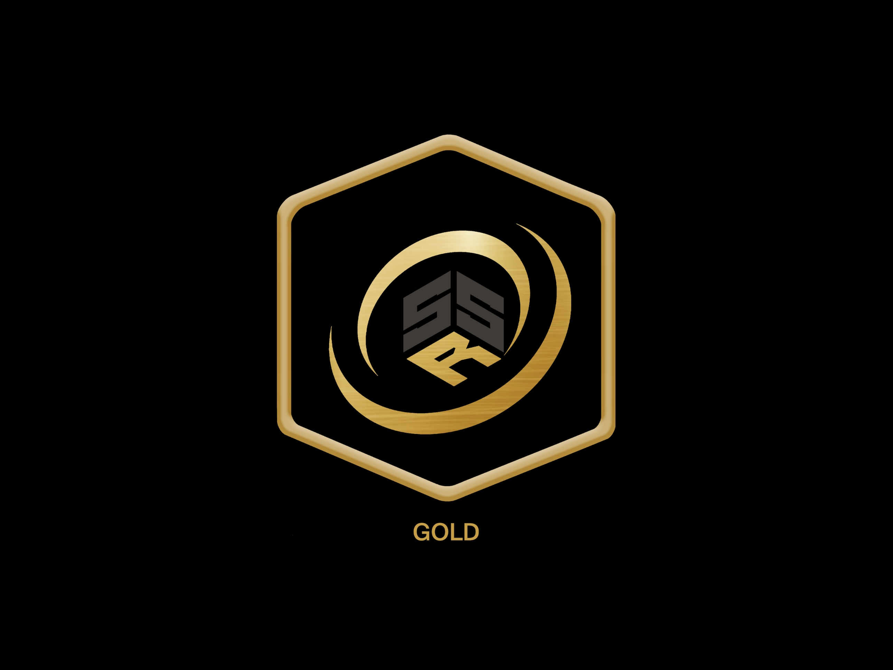
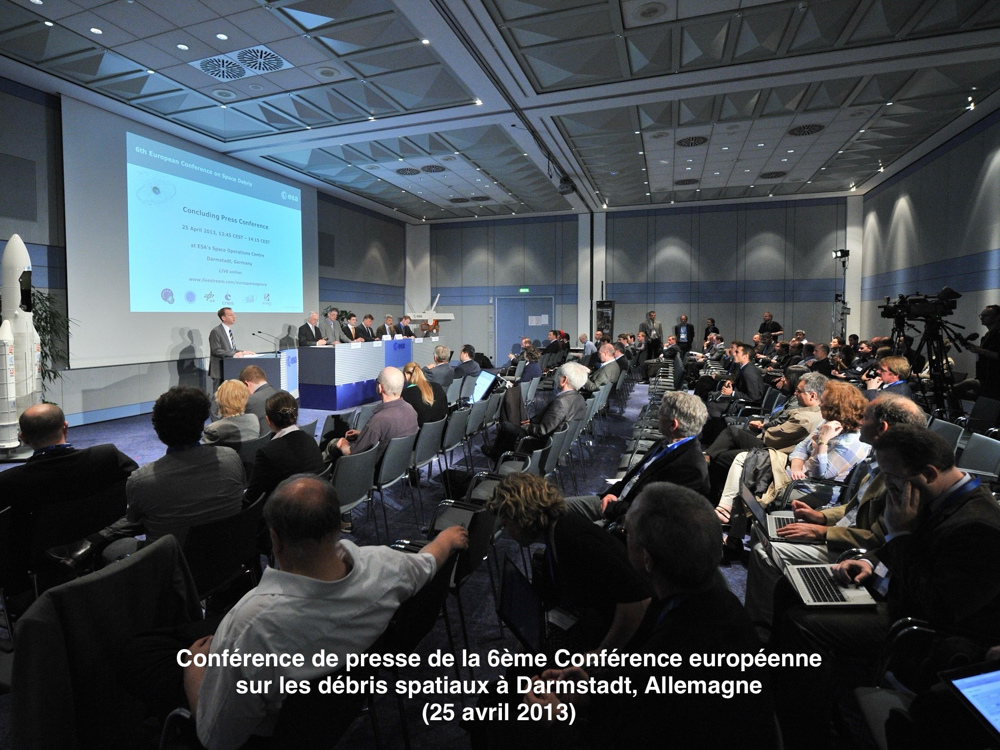
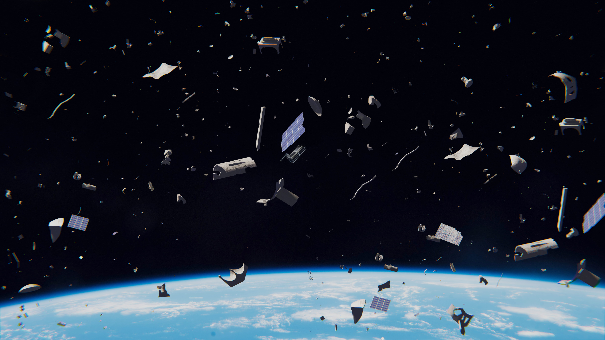
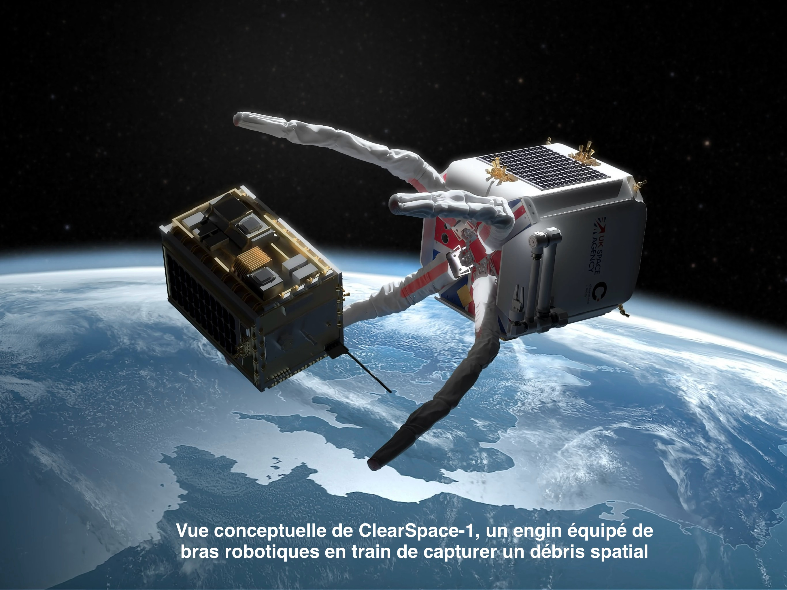

NOS SOLUTIONS
Tout n’est pas perdu : malgré l’ampleur du problème, des solutions concrètes existent
Tout n’est pas perdu : malgré l’ampleur du problème, des solutions concrètes existent
La première étape consiste simplement à éviter d’aggraver le problème. Aujourd’hui, chaque nouveau satellite
devrait être conçu pour ne pas devenir un débris plus tard. Cela passe par de meilleures pratiques dès la
conception, par exemple prévoir une fin de mission propre ou limiter les risques de collision.
C’est dans cette logique qu’a été créé le Space Sustainability Rating (SSR) en 2021. Le principe est
simple :
les missions spatiales reçoivent une note (bronze, argent, or ou platine) selon leur comportement
environnemental.
Cette note est publique, ce qui pousse les entreprises à faire mieux pour préserver leur image. Le SSR fournit
aussi des conseils concrets pour améliorer les missions futures. L’idée est donc de créer une forme de
compétition
positive
autour de la durabilité.

Le problème des débris ne peut pas être réglé par un seul pays ou une seule entreprise. Tout le monde utilise
l’orbite,
mais personne ne veut payer seul pour la protéger. C’est pourquoi plusieurs pistes sont envisagées.
Certains imaginent un grand accord international, mais les tensions politiques rendent cette option
difficile. D’autres pensent que
la pression du marché pourrait fonctionner, car une entreprise qui protège l’environnement spatial gagne la
confiance des clients et investisseurs.
Il existe aussi l’idée d’un service public spatial, où des États financeraient ensemble le nettoyage, ou encore
d’une action collective entre
entreprises privées qui se mettraient d’accord pour payer des services de dépollution.
Le scénario le plus réaliste est un mélange de coopération entre États et d’engagement
volontaire des entreprises. Sans cela, chacun
continue à polluer un peu, et le problème empire pour tous.

Même avec une bonne prévention, il faut aussi s’occuper des objets déjà en orbite. Une solution assez directe
est la désorbitation.
Cela consiste à forcer un satellite en fin de vie à redescendre dans l’atmosphère, où il y brûle naturellement.
Pour y parvenir, il faut prévoir dès le départ des moteurs ou des réserves d’énergie supplémentaires.
Cela augmente les coûts,
mais celui de l'inaction est bien plus élevé. La France a été l’un des premiers pays à intégrer ce
principe dans sa
législation spatiale, obligeant les opérateurs à mieux gérer la fin de vie de leurs engins.
Cette méthode est efficace, mais elle doit être pensée très tôt dans la mission. La
durabilité d'un engin doit devenir un réflexe et pas une option.

Enfin, il existe des projets pour nettoyer activement l’espace. Certains utilisent des filets, un peu comme à la
pêche. C’est ce qu’a testé
la mission européenne RemoveDEBRIS, qui a réussi à capturer un petit satellite et à accélérer sa rentrée
atmosphérique.
D’autres projets misent sur des bras robotiques. Le plus avancé est ClearSpace-1, développé avec l'EPFL
(École
polytechnique
fédérale de Lausanne). L’objectif est de saisir un gros débris et de le désorbiter dès 2026. À terme, cela
pourrait créer un vrai marché
de la maintenance spatiale.
Il existe même des idées utilisant des lasers depuis la Terre pour dévier légèrement les petits débris
et les faire retomber. Ces méthodes
sont encore expérimentales, mais prometteuses.
L’essentiel est de comprendre qu’on ne pourra jamais récupérer tous les fragments. Les scientifiques
recommandent surtout d’enlever quelques
gros objets chaque année, car ce sont eux qui, en cas de collision, produisent des milliers de nouveaux débris.

Les avancées technologiques montrent que le nettoyage de l’espace devient progressivement possible. À long terme,
ces initiatives pourraient structurer un véritable secteur économique dédié à la gestion responsable des orbites.
Cependant, même si ces solutions existent, elles ne seront jamais pleinement appliquées ni respectées tant
que les
acteurs ne percevront pas un intérêt clair à agir. Il faut un intérêt capable de réellement attirer leur
attention, un intérêt financier. Sans cela, les efforts resteront partiels.
C’est précisément ce que montre le modèle économique du syndrome de Kessler développé par les chercheurs
Nadir
Adilov, Peter J. Alexander et Brendan M. Cunningham. Leur approche met en évidence un cadre concret démontrant
qu’il devient, à terme, moins rentable de ne pas intervenir. Plus la densité de débris augmente, plus les
satellites sont détruits rapidement, plus les coûts d’assurance grimpent et plus les lancements deviennent
risqués. À partir d’un certain seuil, le système devient économiquement autodestructeur et l’économie spatiale
peut se fragiliser avant même que les orbites ne soient totalement saturées.
Dans ce travail de recherche, je cherche principalement à sensibiliser et à populariser cette
problématique. Notre
civilisation devient de plus en plus technologique et dépendante de l’espace. C’est pour cela qu’il est primordial
de créer une pression supplémentaire sur les entreprises privées et les États pour les pousser à bien agir, ne
serait-ce que pour préserver leur image publique.
Une chose est claire : l’inaction a un coût réel. Et tous les investissements, réglementations
et
mesures de prévention mentionnés tout au long de ce travail sont nécessaires pour assurer le futur de
l’exploration spatiale.
Basé sur
Travail de recherche
Pauline Mophou - 2026